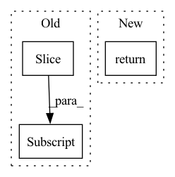

Pattern ID :39473
Before Change
return f1
def accuracy(prediction, ground_truth):
prediction = prediction[:len(ground_truth)]
return prediction.lower() == ground_truth.lower()
def get_rouge_over_list(prediction, groundtruth):
def remove_punc(text):After Change
if isinstance(prediction, str) and isinstance(ground_truth, str):
return prediction.lower() == ground_truth.lower()
else:
return prediction == ground_truth
def get_rouge_over_list(prediction, groundtruth):
def remove_punc(text):In pattern: SUPERPATTERN
Frequency: 3
Non-data size: 3
Instances Fragment ID: 112099336
Project Name: thunlp/openprompt
Commit Name: bf5aae2638b7dc312a62420a666908f12e441d9a
Time: 2022-03-25
Author: shengdinghu@gmail.com
File Name: openprompt/utils/crossfit_metrics.py
M Class Name: AnonimousClass
N Class Name: AnonimousClass
M Method Name: accuracy(2)
N Method Name: accuracy(2)
M Parent Class:
N Parent Class:
M File Name: openprompt/utils/crossfit_metrics.py
N File Name: openprompt/utils/crossfit_metrics.py
M Start Line: 247
M End Line: 248
N Start Line: 247
N End Line: 251
Before Change
input_percentages[x] = seq_length / float(max_seq_len)
target_sizes[x] = len(target)
targets[x][:len(target)] = torch.IntTensor(target)
target_transcripts[x][:len(target_transcript)] = torch.IntTensor(target_transcript)
langs[x] = lang_id
lang_names.append(lang_name)
After Change
// print(">", targets[0], langs, lang_names)
// print(target_transcripts)
return inputs, targets, input_percentages, input_sizes, target_sizes
class AudioDataLoader(DataLoader): Fragment ID: 112099337
Project Name: audioku/cross-accent-maml-asr
Commit Name: decaa8936d18a5dee37b379bf18dc0edd48f3e30
Time: 2019-11-02
Author: gentaindrawinata@gmail.com
File Name: utils/data_loader.py
M Class Name: AnonimousClass
N Class Name: AnonimousClass
M Method Name: _collate_fn(1)
N Method Name: _collate_fn(1)
M Parent Class:
N Parent Class:
M File Name: utils/data_loader.py
N File Name: utils/data_loader.py
M Start Line: 325
M End Line: 362
N Start Line: 327
N End Line: 347
Before Change
if first_stage:
first_stage = False
self.memory_context.end_batch(b_ix)
return tuple(x[:len(batch_indices)] for x in args)
def __next__(self):
result = self.output_queue.get()After Change
pass
result = tuple(args[f"result_{x}"] for x in outputs)
return result
def __next__(self):
result = self.output_queue.get() Fragment ID: 112099335
Project Name: libffcv/ffcv
Commit Name: f8baf227d1243d4207c082d8ea11b89b5a73da32
Time: 2022-02-08
Author: leclerc@mit.edu
File Name: ffcv/loader/epoch_iterator.py
M Class Name: EpochIterator
N Class Name: EpochIterator
M Method Name: run_pipeline(5)
N Method Name: run_pipeline(5)
M Parent Class: Thread
N Parent Class: Thread
M File Name: ffcv/loader/epoch_iterator.py
N File Name: ffcv/loader/epoch_iterator.py
M Start Line: 113
M End Line: 142
N Start Line: 111
N End Line: 140